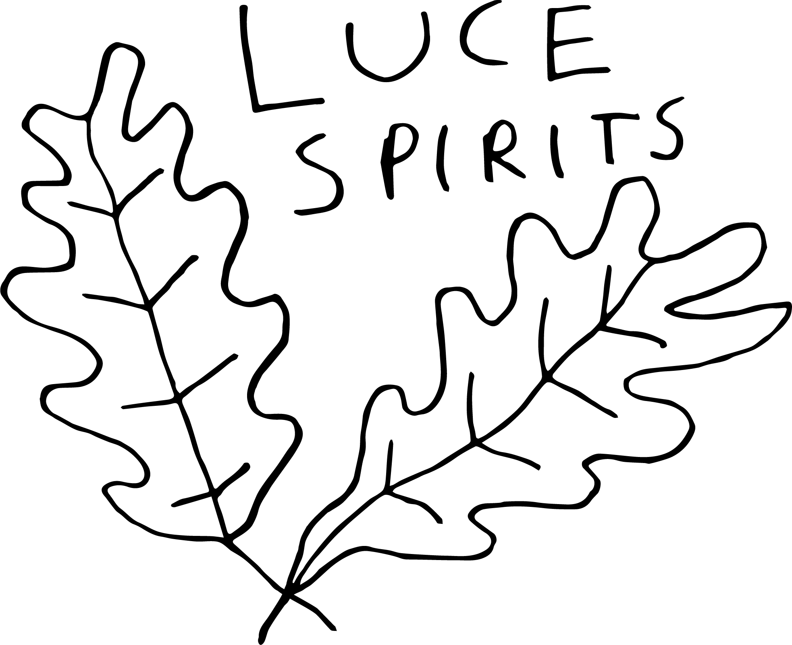
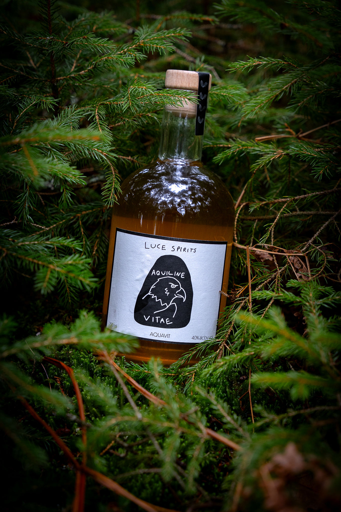
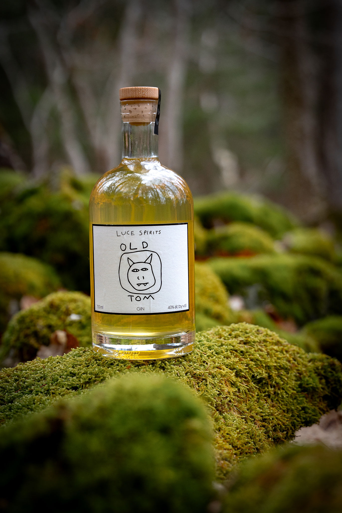
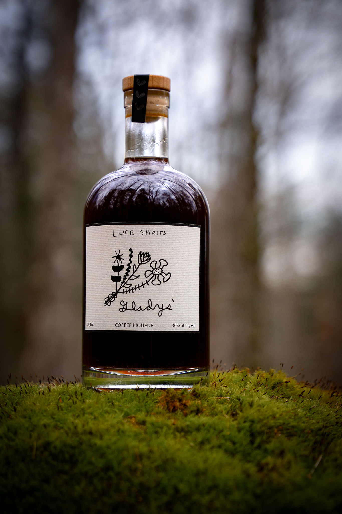
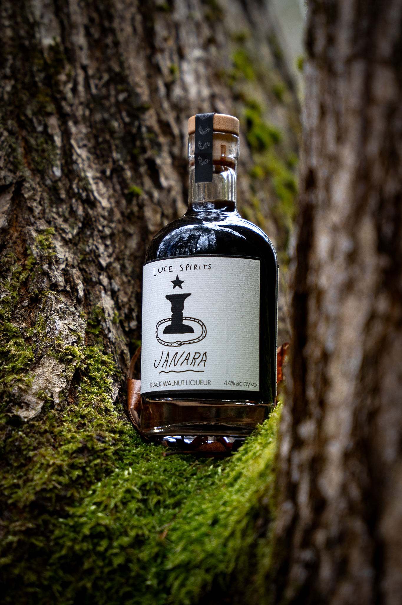
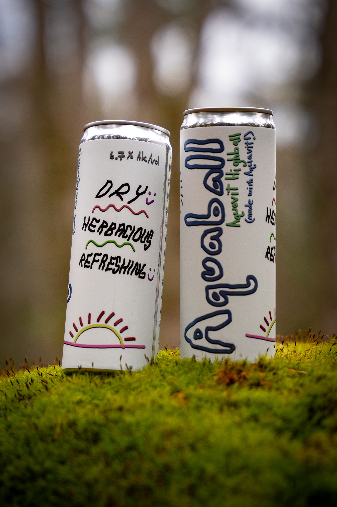
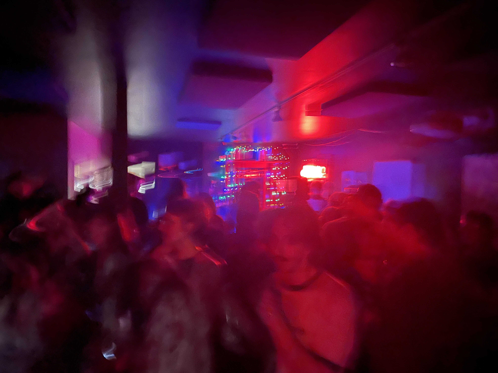

Luce Spirits is a distillery, tasting room, lounge, and bottle shop focusing on plant-focused spirits.
We make a variety of botanically-oriented products inspired by the flora and culture of Mid-Coast Maine. We use wild-foraged, locally grown, and organic ingredients to make delicious stuff: sometimes traditional, sometimes less so. A little nip before your Wednesday Casserole? Perfect! A wedding present for your fancy uncle? Also perfect!
Our tasting room in downtown Rockland regularly serves up classic and inventive cocktails and has been host to late-night hangs, first dates, dance parties and more. Stop in for a drink, a bottle to-go, or just to say hello.
Wednesday – Monday · 4–10 PM
474 Main Street, Rockland, Maine
Hours are subject to change — see our Instagram for updates

The word aquavit comes from the Latin Aqua Vitae, "water of life". Our Swedish-style aquavit is based on a family recipe and is perfect after a hot Yuletide sauna or a cold Midsummer swim. Like Zosimus says: it parts the spirit from the body, and binds the spirit to the body. Skål!

JUNIPER, Tree of Life!!! This blessed "ever-green" has been used by cultures across the globe for millennia to purify negative influences and send prayers to the heavens. Our Old Tom is a nod to the pre "London Dry" era; we use freshly collected whole-branch juniper, which imparts both a slight sweetness and a rugged earthiness to the spirit. Use it in any gin cocktail, or sip it on ice when you need to banish fearful emotions.
WORMWOOD! She bears the Latin name Artemisia Absinthium, which refers to both the Greek goddess of Wild Things (Artemis), and its most famous use as a key botanical in absinthe. Wormwood provides the bitter bite to this misunderstood spirit (similar perhaps, to the mythical bite of young women in the Cult of Artemis who "acted the bear" during periods of ritual wildness) — so be sure to use it sparingly: either as an anise-y accent in your favorite cocktail, or in a 1:4 ratio with ice-cold water on a sweltering day.

Made with cold-brewed coffee from a Maine roaster we've worked with since the beginning. Rich, roasted, and not too sweet — enough sweetness to balance, not to bury.


Our bone-dry, herbaceous canned Aquavit Highball::::: Very refreshing, very good for drinking at sunset. 6.7% Alc/vol.
Luce Spirits was founded in 2021 by Nate Luce, who learned the trade at Brooklyn's renowned Kings County Distillery. He made his first test batch of absinthe there using un-aged whiskey, which set him on a path of research into the history and processes of myriad botanical spirits. We're still making that absinthe (and are currently New England's only regular producer of it), and have expanded production to all manners of familiar and novel sipping experiences.
Our tasting room in downtown Rockland regularly serves up classic and inventive cocktails and has been host to late-night hangs, first dates, dance parties and more. Stop in for a drink, a bottle to-go, or just to say hello.

474 Main Street, Rockland, Maine 04841
nate@lucespirits.com
@lucespirits
Event inquiries: lizzie@lucespirits.com
Check who is carrying specific spirits through Maine Spirits. Be sure to request our stuff at your favorite bar, restaurant, or liquor store!